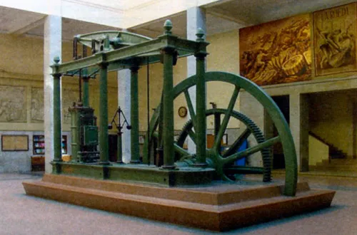
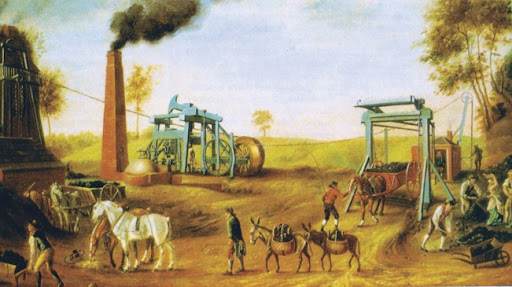
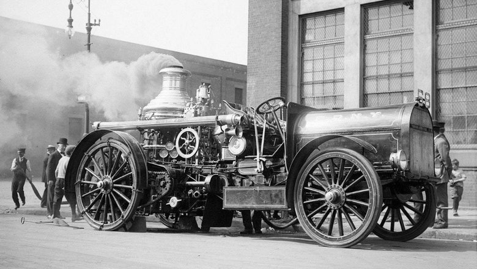
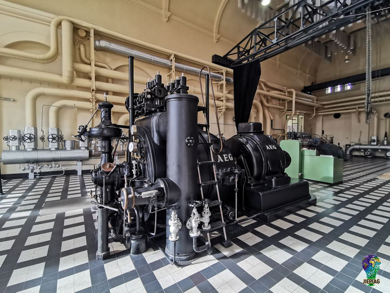
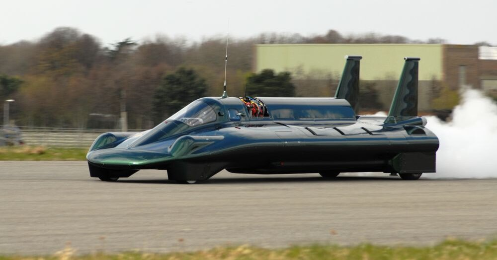

ПАРОВАЯ МАШИНА: ИСТОРИЯ, КОНСТРУКЦИЯ И ПРИМЕНЕНИЕ
ВВЕДЕНИЕ
Паровая машина представляет собой один из величайших изобретений человечества, которое кардинально изменило ход истории и положило начало промышленной революции. Это тепловой двигатель внешнего сгорания, преобразующий энергию пара в механическую работу. Паровая машина стала символом технического прогресса XVIII и XIX веков, обеспечив возможность механизации производства и развития транспорта.
Уникальность паровой машины заключается в том, что она стала первым практическим устройством, способным преобразовывать тепловую энергию в механическую работу в промышленных масштабах. До ее изобретения человечество полагалось исключительно на мускульную силу людей и животных, энергию ветра и воды. Паровая машина освободила производство от географических ограничений и позволила создавать фабрики в любых местах, где была доступна вода и топливо.
ИСТОРИЯ СОЗДАНИЯ ПАРОВОЙ МАШИНЫ
Ранние попытки использования пара
Идея использования пара для совершения механической работы не нова. Еще в I веке нашей эры древнегреческий математик и инженер Герон Александрийский создал эолипил — устройство, которое можно считать прообразом паровой турбины. Однако это изобретение носило скорее демонстрационный характер и не нашло практического применения.
В эпоху Возрождения интерес к паровым устройствам возродился. Леонардо да Винчи оставил в своих записях наброски паровых пушек и других устройств, использующих силу пара. Однако практическая реализация этих идей была невозможна из-за отсутствия необходимых технологий обработки металла и точных методов изготовления деталей.
Первые практические паровые машины

Первая практически применимая паровая машина была создана в 1698 году английским инженером Томасом Севери. Его устройство, получившее название "Друг шахтера", предназначалось для откачки воды из шахт. Машина Севери работала без поршня, используя конденсацию пара для создания разрежения, которое всасывало воду. Хотя эта машина была неэффективной и опасной, она доказала принципиальную возможность использования пара для практических целей.
В 1712 году Томас Ньюкомен, английский кузнец и изобретатель, создал атмосферную паровую машину, которая стала значительным шагом вперед. Машина Ньюкомена использовала поршень и цилиндр, а также систему клапанов для управления подачей пара и воды. Она работала по принципу создания разрежения в цилиндре путем конденсации пара холодной водой. Хотя КПД этой машины был очень низким (менее 1%), она широко использовалась для откачки воды из шахт на протяжении более 50 лет.
Революция Джеймса Уатта
Настоящий прорыв в развитии паровых машин произошел благодаря шотландскому изобретателю и инженеру Джеймсу Уатту (1736-1819). В 1765 году, работая над ремонтом модели машины Ньюкомена в университете Глазго, Уатт понял основную причину неэффективности существующих машин: значительные потери тепла при попеременном нагреве и охлаждении цилиндра.
Гениальное решение Уатта заключалось в создании отдельного конденсатора пара, что позволило поддерживать цилиндр постоянно горячим. Это изобретение, запатентованное в 1769 году, увеличило эффективность паровой машины в несколько раз. Уатт также разработал механизм преобразования возвратно-поступательного движения поршня во вращательное движение, что открыло возможность использования паровых машин для привода различных механизмов, а не только для откачки воды.
В 1781 году Уатт создал паровую машину с планетарной передачей, которая преобразовывала возвратно-поступательное движение во вращательное. В 1782 году он запатентовал машину двойного действия, в которой пар подавался по обе стороны поршня, что еще больше повысило эффективность. Эти изобретения сделали паровую машину универсальным источником механической энергии.
КОНСТРУКТОРЫ И ИЗОБРЕТАТЕЛИ
Джеймс Уатт - главный конструктор
Джеймс Уатт по праву считается отцом современной паровой машины. Родившийся в Гриноке, Шотландия, Уатт с детства проявлял интерес к механике и математике. Работая инструментальщиком в университете Глазго, он получил доступ к лучшим научным знаниям своего времени и возможность экспериментировать.
Партнерство Уатта с промышленником Мэтью Болтоном, основанное в 1775 году, стало ключевым фактором успеха. Болтон предоставил финансовую поддержку и производственные мощности на своем заводе "Сохо" в Бирмингеме. Вместе они создали компанию "Болтон и Уатт", которая стала ведущим производителем паровых машин в мире.
Уатт не только улучшил конструкцию паровой машины, но и ввел единицу измерения мощности — лошадиную силу, которая используется до сих пор. Он также разработал множество вспомогательных устройств и механизмов, включая центробежный регулятор скорости, индикатор давления пара и различные типы клапанов.
Другие значимые изобретатели
После Уатта многие инженеры внесли свой вклад в развитие паровых машин. Ричард Тревитик создал первые паровые машины высокого давления, что позволило значительно уменьшить размеры установок. Джордж Стефенсон применил паровые машины для железнодорожного транспорта, создав знаменитый паровоз "Ракета".
УСТРОЙСТВО ПАРОВОЙ МАШИНЫ
Паровая машина состоит из нескольких основных функциональных частей, каждая из которых выполняет определенную роль в процессе преобразования энергии пара в механическую работу. Понимание устройства каждой части необходимо для полного понимания принципов работы установки.
Функциональные части установки
- Цилиндр
- Поршень
- Клапанный механизм
- Шатун
- Кривошип
- Маховик
Основные компоненты
Цилиндр и поршень — это сердце паровой машины. Цилиндр представляет собой полый металлический корпус, внутри которого движется поршень. Поршень представляет собой диск, плотно прилегающий к стенкам цилиндра благодаря поршневым кольцам. Под действием пара поршень совершает возвратно-поступательное движение, которое преобразуется во вращательное движение маховика.
Клапанный механизм управляет подачей пара в цилиндр и выпуском отработанного пара. В машинах Уатта использовался золотниковый клапан, который перемещался синхронно с движением поршня, открывая и закрывая каналы для впуска и выпуска пара. Современные паровые машины используют более сложные системы клапанов, включая тарельчатые и игольчатые клапаны.
Шатун и кривошип преобразуют возвратно-поступательное движение поршня во вращательное движение маховика. Шатун соединяет поршень с кривошипом, который закреплен на валу маховика. Эта система позволяет преобразовать линейное движение в круговое, что является ключевым для работы большинства механизмов.
Маховик — это тяжелое колесо, закрепленное на валу. Его основная функция — накопление кинетической энергии и сглаживание неравномерности работы машины. Благодаря большой массе маховик продолжает вращаться даже во время тактов, когда поршень не создает движущей силы, обеспечивая плавную и равномерную работу установки.
ПРИМЕНЕНИЕ ПАРОВЫХ МАШИН
Промышленное применение

Первоначально паровые машины использовались главным образом для откачки воды из шахт, что было критически важно для угольной промышленности. Однако после изобретений Уатта область применения значительно расширилась. Паровая машина стала основным источником механической энергии для текстильных фабрик, металлургических заводов, мукомольных мельниц и других промышленных предприятий.
В текстильной промышленности паровые машины приводили в действие прядильные и ткацкие станки, что позволило резко увеличить производительность труда. На металлургических заводах паровые машины использовались для привода прокатных станов, молотов и других механизмов. Это привело к революции в производстве металла и созданию крупных промышленных центров.
Транспортное применение
Одним из самых значимых применений паровых машин стало создание парового транспорта. В 1807 году Роберт Фултон создал первый коммерчески успешный пароход "Клермонт", который начал регулярные рейсы по реке Гудзон. Пароходы революционизировали водный транспорт, позволив судам двигаться независимо от ветра и течения.

Еще более значимым стало применение паровых машин на железнодорожном транспорте. В 1825 году была открыта первая общественная железная дорога Стоктон-Дарлингтон в Англии, а в 1829 году паровоз "Ракета" Джорджа Стефенсона победил в знаменитых соревнованиях в Рейнхилле. Железные дороги с паровозами связали города и страны, ускорив развитие торговли и промышленности.
Сельское хозяйство
Паровая машина нашла применение и в сельском хозяйстве. Паровые тракторы и молотилки значительно повысили эффективность сельскохозяйственных работ. Хотя паровые тракторы были громоздкими и требовали много топлива, они стали важным шагом на пути к механизации сельского хозяйства.
ТЕХНИЧЕСКИЕ ХАРАКТЕРИСТИКИ
Типичная паровая машина эпохи промышленной революции имела мощность от 5 до 100 лошадиных сил. КПД ранних машин Ньюкомена составлял менее 1%, машины Уатта достигли КПД около 3-5%, а более поздние паровые машины высокого давления могли достигать КПД до 10-15%. Для сравнения, современные паровые турбины имеют КПД более 40%.
Рабочее давление пара в машинах Уатта составляло около 1 атмосферы (атмосферные машины), в то время как более поздние машины высокого давления работали при давлении 5-10 атмосфер. Температура пара обычно составляла 100-150°C, хотя в машинах высокого давления она могла достигать 200°C и выше.
ВЛИЯНИЕ НА РАЗВИТИЕ ЦИВИЛИЗАЦИИ
Изобретение и совершенствование паровой машины стало катализатором промышленной революции, которая началась в Англии в конце XVIII века и распространилась по всему миру. Паровая машина позволила создать фабричное производство, которое заменило ремесленное производство и мануфактуры.

Развитие парового транспорта привело к созданию глобальной транспортной сети, которая связала отдаленные регионы и способствовала развитию международной торговли. Железные дороги и пароходы сделали возможным быстрое перемещение людей и товаров на большие расстояния, что было невозможно в доиндустриальную эпоху.
Паровая машина также оказала глубокое влияние на социальную структуру общества. Развитие промышленности привело к росту городов и формированию рабочего класса. Изменился образ жизни миллионов людей, которые переехали из сельской местности в города для работы на фабриках и заводах.
СОВРЕМЕННОЕ ЗНАЧЕНИЕ
Хотя паровые машины поршневого типа в значительной степени были вытеснены двигателями внутреннего сгорания, электрическими двигателями и паровыми турбинами, их принципы работы остаются актуальными. Паровые турбины, которые используются на современных электростанциях, являются прямыми потомками паровых машин и работают на тех же физических принципах.

Паровая машина также остается важным объектом изучения в инженерном образовании, так как она наглядно демонстрирует основные принципы термодинамики, механики и преобразования энергии. Многие технические музеи мира содержат коллекции исторических паровых машин, которые служат напоминанием о важности этого изобретения для развития человеческой цивилизации.
ЗАКЛЮЧЕНИЕ
Паровая машина представляет собой одно из самых значимых изобретений в истории человечества. Она не только произвела техническую революцию, но и изменила экономическую, социальную и культурную структуру общества. От первых опытов Герона Александрийского до совершенных машин Уатта и их применения в транспорте и промышленности — история паровой машины является историей человеческого стремления к прогрессу и инновациям.
Изучение паровой машины позволяет понять не только технические принципы преобразования энергии, но и исторический контекст промышленной революции. Это устройство служит прекрасным примером того, как одно изобретение может изменить весь мир и открыть новые возможности для развития цивилизации.
В современную эпоху, когда мы сталкиваемся с новыми вызовами в области энергетики и экологии, изучение истории паровой машины напоминает нам о важности инноваций и поиска эффективных решений. Принципы, заложенные в работу паровой машины, продолжают использоваться в современных энергетических системах, демонстрируя непреходящую ценность фундаментальных инженерных решений.